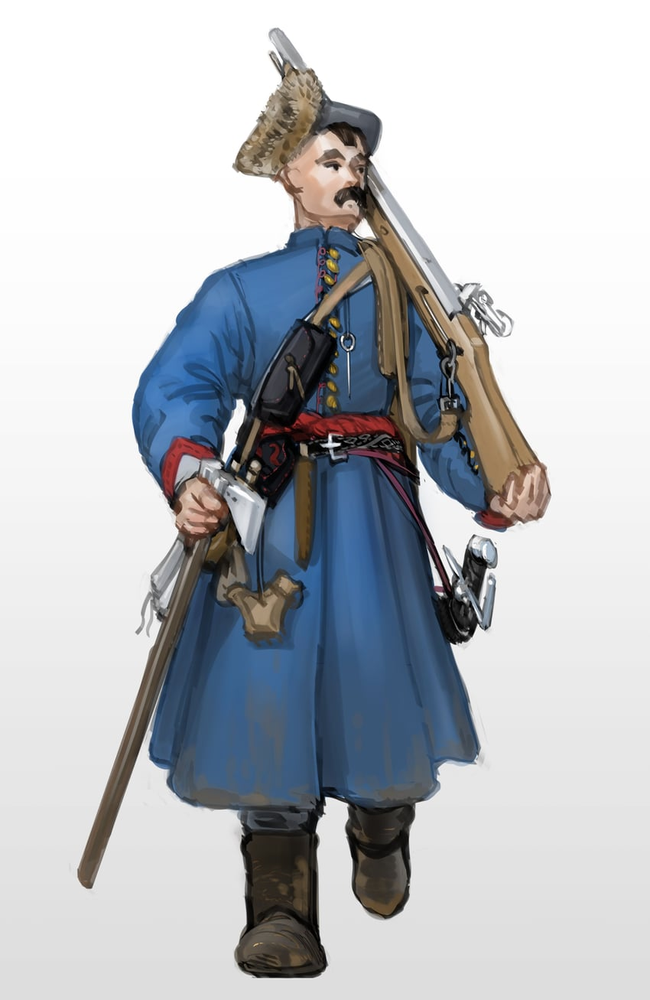

Ця гра дозволить вам нарешті запам'ятати ті циферки. Ви будете повторювати дати знов і знов допоки вони не стануть частиною Вас. Ціль 50 правильних відповідей, до речі
Доба козацтва — це період української історії, пов'язаний з діяльністю вільних озброєних людей (козаків), та їх лідерів.
Основою козацького війська були професійні військові, що були записані в список, "реєестр".
В 1848 році, на Військовій раді в Запорізькій Січі Богдана Хмельницького обрали гетьманом Війська Запорізького.
Протягом 1648 року козацьке військо Богдана Хмельницького розбило польске каральне військо поблизу міст Жовті Води та Корсунь
... та Пилявцями. Українські землі фактично вийшли з-під польского управління
Військові дії поновлено в 1649 році, та козаки практично розбили польсське військо, однак татари (союзники козаків) були підкуплені польським королем.
Зборівський мирний договір 1649 року передбачав поширення влади Б. Хмельницького на ТРИ Воєводства, 40 тисяч реєстру та вигнання польских панів
Після дворічного перемир'я бойові дії почалися з новою сило. В великій битві під БЕрестечком в 1651 р. козацькі війська зазнали поразки. Польські війска просунулися аж до м. Біла Церква
Білоцерківська угода обмежувала козаків територією - 1 воєводство замість 3, кількістю війська - 20 тис. замість 40 тис. та політично
Наступного року польске військо було розбито і Хмельницький відновив владу над трьома воєводствами та прикордонням